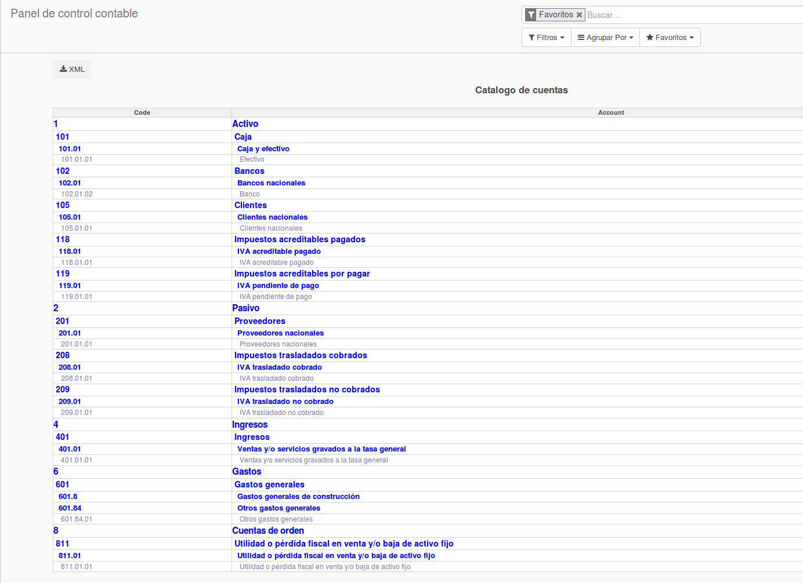
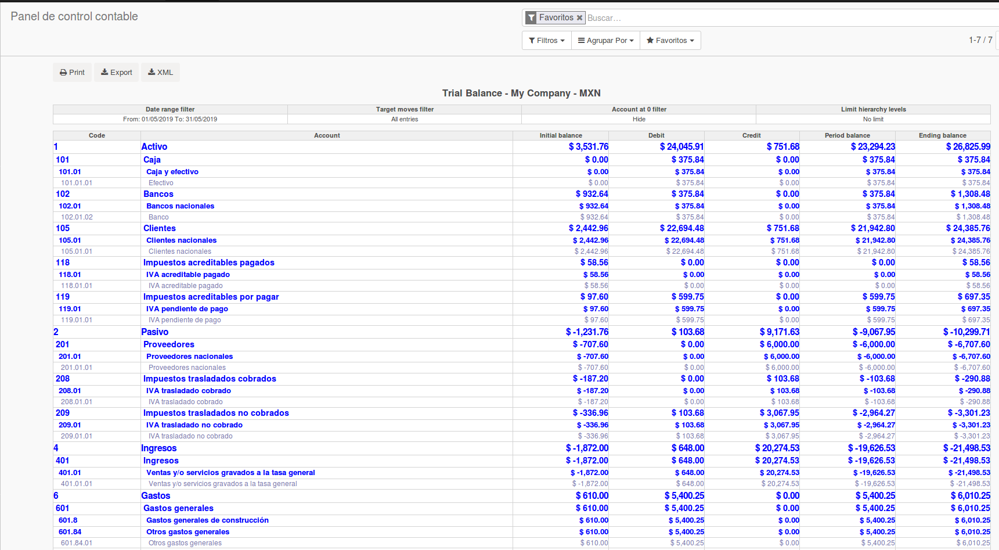
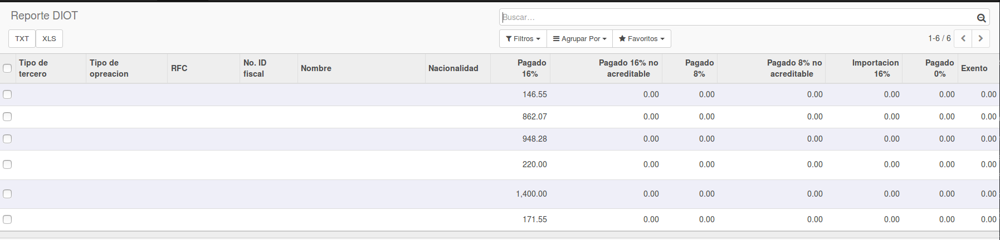

<section class="oe_container oe_dark">
   <meta charset="utf-8"> 
    <div class="oe_row oe_spaced">
        <div class="oe_span12">
            <h2 class="oe_slogan">Módulo para emitir contabilidad electrónica en México</h2>
            <h3 class="oe_slogan">Agrega funciones adicionales al módulo de contabilidad / facturación para emitir la contabilidad electrónica en México</h3>
            <h4 class="oe_slogan">Se pueden emitir:</h4>
            <div class="oe_screenshot" style="text-align: left;">
			
			 <li style="color:#30054D;">Catálogo de cuentas</li>
               </ul>
               <br /><br />
			   
			   <ul>
               <li style="color:#30054D;">Balanza de comprobación.</li>
               </ul>
               <br /><br />
			 
               <ul>
               <li style="color:#30054D;">DIOT</li>
               </ul>
               <br /><br />

            </div>
            <div class="oe_slogan text-center">
            </div>
        </div>
    </div>
</section>
<br/>
<section class="oe_container oe_dark">
    <div class="oe_row ">
        <div class="oe_slogan text-center">
            <a href="http://www.itadmin.com.mx" target="_blank">
                
            </a>
            <br/>
            <div class="oe_span12">
            <h2 class="text-center"><a>Nosotros</a></h2>
        </div>
            <span>
                <a style="color: #a24689 !important;" href="http://www.itadmin.com.mx" target="_blank">Página web</a> | 
                <a style="color: #a24689 !important;" href="http://www.itadmin.com.mx/blog/conozca-como-la-tecnologia-ayuda-a-su-negocio-1" target="new">Blog</a> | 
                <a style="color: #a24689 !important;" href="mailto:info@itadmin.com.mx">E-Mail</a>
            </span>
        </div>
    </div>
</section>
